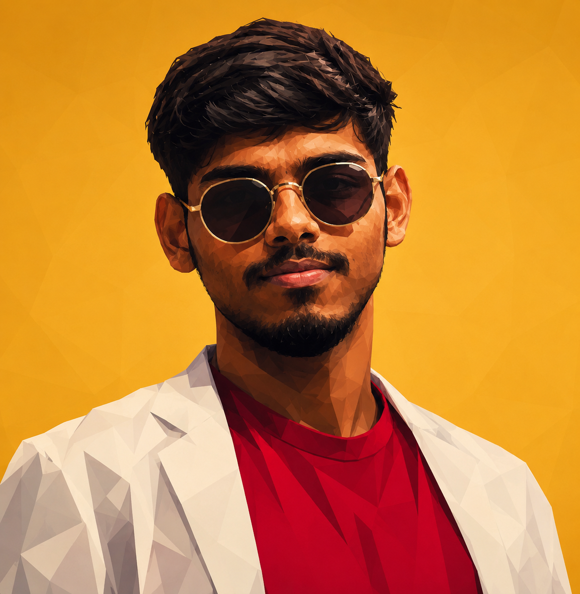
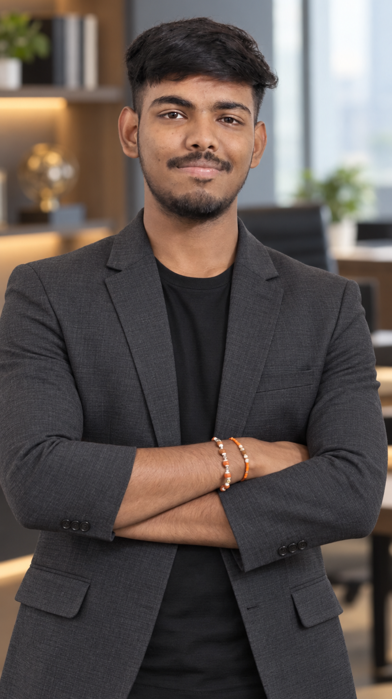

Professional profile
Ritesh Vilas Dhatrak


Computer Engineering student and multidisciplinary developer based in Nashik, Maharashtra, India. Ritesh works across AI/ML concepts, Android development, UI/UX design, and frontend web development, with an interest in accessible, useful digital products.
Who is Ritesh Dhatrak?
Ritesh Vilas Dhatrak is a Computer Engineering student and multidisciplinary developer whose resume describes hands-on projects in AI/ML concepts, native Android development, UI/UX design, and frontend web development. He is interested in internships and fresher opportunities in these areas.
Skills and areas of work
His resume lists Python, TensorFlow/Keras, OpenCV, computer vision, CNN, image classification, object detection, and FastAPI among his AI/ML skills. Android technologies include Java, XML, Android Studio, Android SDK, REST API integration, Firebase, and basic Jetpack Compose. His design toolkit includes Figma, Canva, wireframing, prototyping, user flows, responsive design, mobile UI, and usability design. He also lists HTML, CSS, JavaScript, DOM manipulation, Git, GitHub, and basic Supabase.
Selected projects
- VisionAssist AI: An AI and computer vision concept for identifying objects from camera input and giving accessible voice and on-screen feedback.
- CareerCraft AI: A career guidance and resume support app concept for students and freshers, with resume building, skill analysis, and career recommendations.
- CareerCraft: The portfolio also presents a mobile career platform for exploring professional opportunities and career resources, built with Java, XML, and Firebase.
- Swarajya Explorer / FortQuest: An educational fort exploration project about the history and legacy of Chhatrapati Shivaji Maharaj, with quizzes and child-friendly learning screens. The portfolio lists a project named FortQuest with a similar forts-and-education description.
- Attendance App: A mobile concept for recording and reviewing daily attendance information.
- Nashik City Bus: A redesigned bus app concept focused on route discovery and commuter information.
- Food App: A Flutter app experience for browsing food and following a focused ordering journey.
- IRCTC redesign: An independent railway booking interface concept exploring clearer journey input and train search.
- JARVIS Personal Assistant: An automation concept, also shown in the portfolio as Jarvis.
- DevPortfolio: A responsive portfolio website built with HTML, CSS, and JavaScript.
- Additional concepts: Stress detection using handwriting, face, and voice; a food delivery app UI/UX concept; and a student attendance system.
Project descriptions and screenshots are available in the portfolio projects section.
Education
- B.Tech in Computer Engineering — currently pursuing.
- Diploma in Cloud Computing & Big Data — 2023–2026; 79.47% as listed on the resume.
The resume does not list employer names or employment dates.
Portfolio and contact
Portfolio GitHub LinkedIn Instagram Email Ritesh WhatsApp
An Instagram profile URL is not listed in the resume or portfolio source.